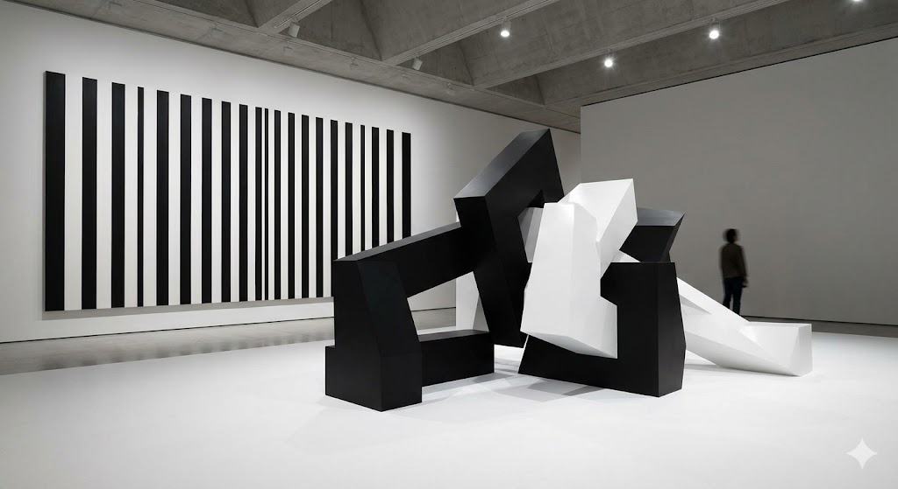
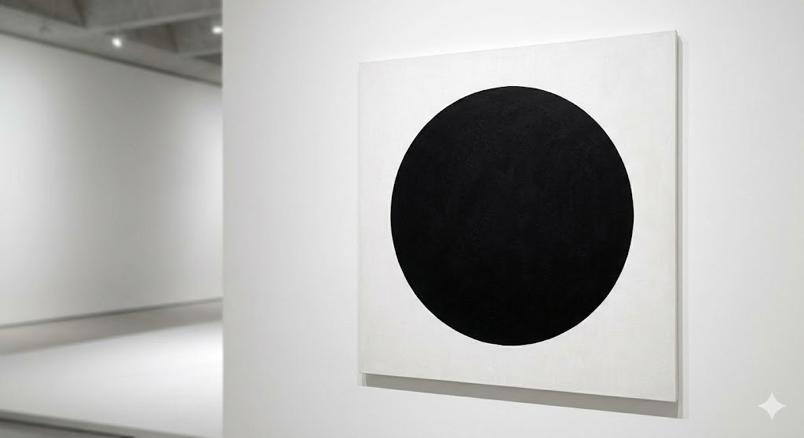
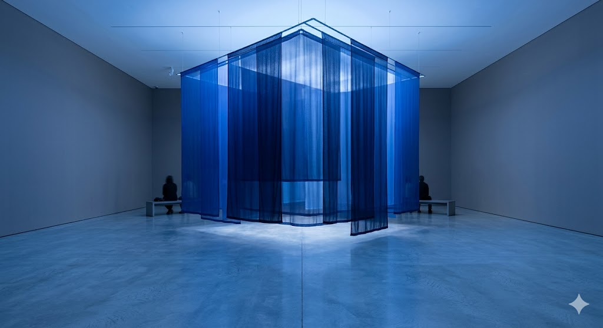
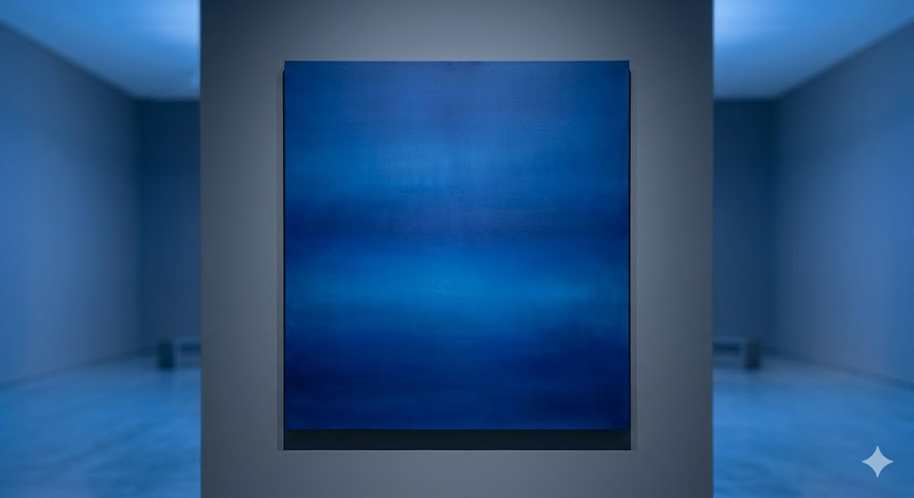

Exhibition 1: Black / White / Infinite
By stripping away the distraction of color, Black / White / Infinite forces the viewer to confront the fundamental elements of visual language: light, shadow, form, and texture. This collection challenges the notion that a limited palette results in limited expression. Instead, it suggests that within the binary of black and white lies an infinite spectrum of gray, capable of conveying profound emotional weight and architectural precision.


Exhibition 2: Blue Silence
Blue Silence is an exploration of the most elusive color in the natural world. While blue is the color of the vast sky and the deep sea, it is rarely found in the earth itself. This exhibition focuses on blue not as a pigment, but as an environmental condition. Through the use of neon, LED, and natural light filtered through cobalt glass, the gallery space is transformed into a meditative "pressure chamber" of hue, designed to lower the heart rate and quiet the internal monologue of the viewer.

